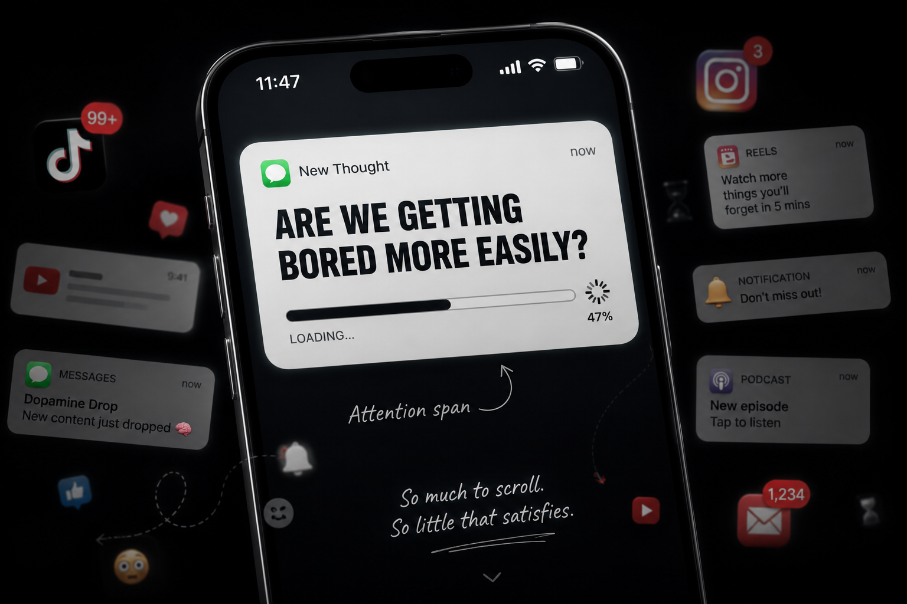
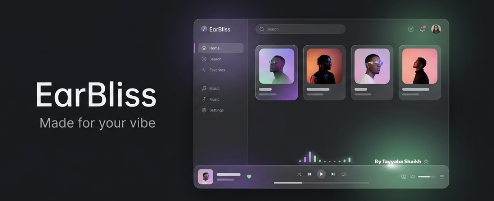
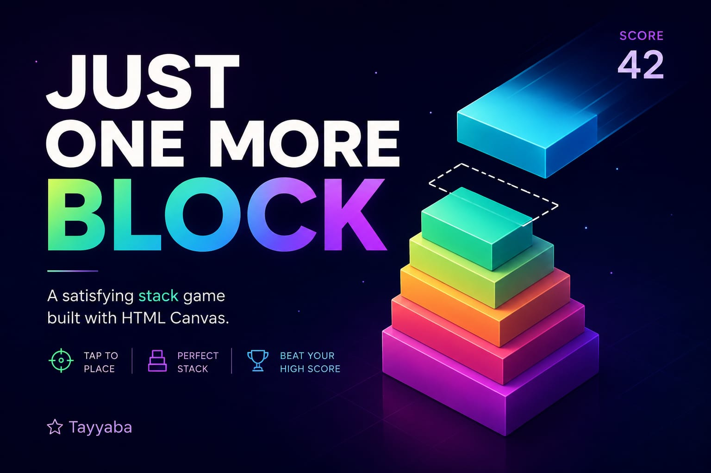
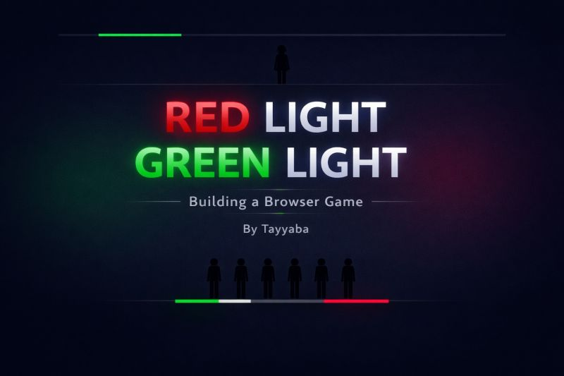
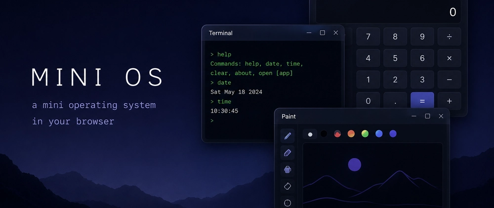
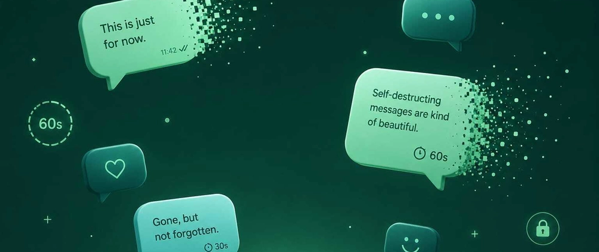

Blogs

Are We Getting Bored More Easily Than Before?
A reflection on attention, boredom, and modern digital habits...

I tried making a Spotify clone
But ended up making this instead...

Just one more block
Hehe, try again...

Get punished for pressing space at the wrong time
It's not squid game, promise...

Tiny Operating System in Browser
Building a desktop-like system using JavaScript...

Self-Destruct Messages Platform
A small experiment with temporary messaging...